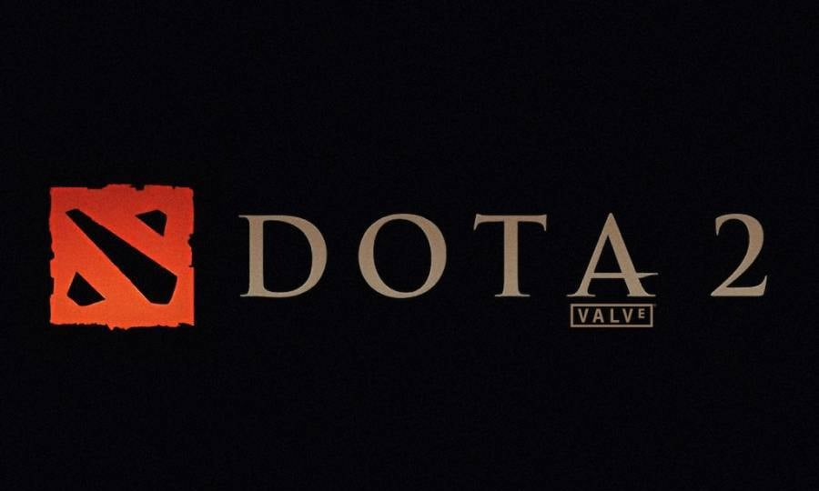
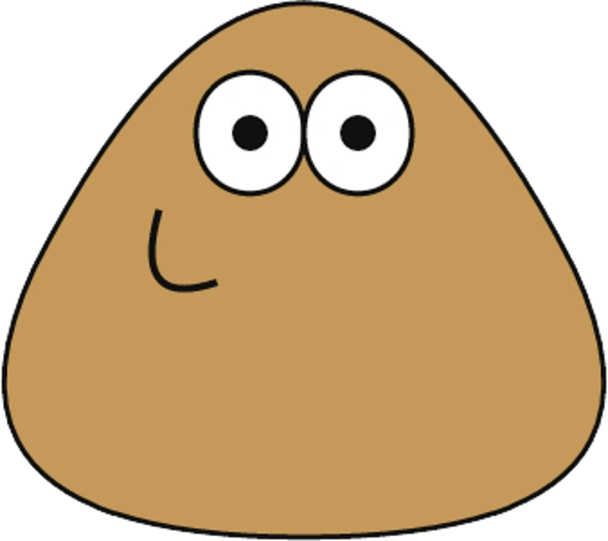
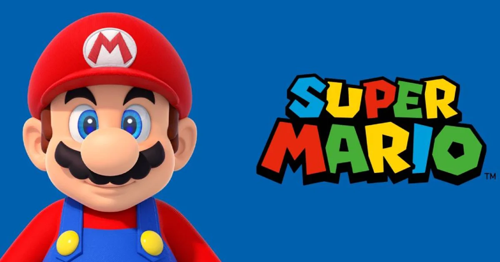
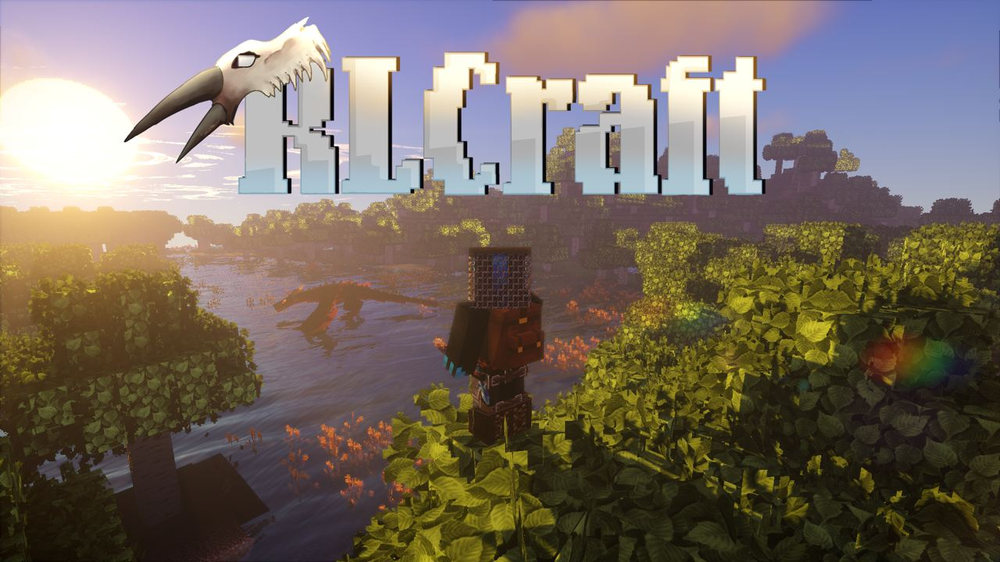

ali nejat
my top 10 games :
- mincraft

اصل بازی در واقع جمع کردن و گذاشتن این اشیاء بر روی یکدیگر است. این بلوک ها در بازی پخش می شوند و
بازیکن
هنگامی که آزادانه در جهان میگردد، این بلوک ها را باید از جای قبلی بردارد و جایی قرار دهد که بتواند سازه
ای
بنا کند. می توان گفت دنیای بازی عملاً نامحدود است و به اندازه جستجو و تلاش بازیکن تولید می شود.
rate: 10/10
- gta_v

ین بازی از دیدگاه سوم شخص یا اول شخص روایت میشود و دنیای آن با پای پیاده یا با وسیله نقلیه پیمایش
میشود.
بازیکنان سه قهرمان اصلی داستان را در سرتاسر بازی بهصورت یکنفره کنترل میکنند و چه در حین انجام
مأموریتها
و چه بدون مأموریت، میان آنها جابهجا میشوند.
rate: 9/10
- fortnite

در بازی فورتنایت، بازیکنان برای زنده ماندن در یک محیط جهان باز، از طریق مبارزه با شخصیتهایی که توسط خود
بازی یا سایر بازیکنان کنترل میشوند، همکاری میکنند. خشونت کارتونی است، اما برخی از شخصیتها و صحنهها
ممکن
است باعث ناراحتی بازیکنان جوانتر شوند
rate: 8/10
- god of war

.داستان بازی درباهٔ کریتوس، جنگجوی اسپارت است که با فریب آرس، خدای جنگ یونانیان و مربی سابقش، دست به
کشتن
همسر و دخترش میزند. کریتوس برای رهایی خود از عذاب و کابوسها به خدمت المپ نشینان در میآید. اما چیزی
نمیگذرد که به دلیل توطئههای آنها، خود را درگیر مقابله با المپ نشینان مییابد
rate: 7/10
- spiderman

بازی اسپایدرمن که با نام هم شناخته میشود، قرار نیست داستانی تکراری با محوریت اسپایدرمن ارائه بدهد؛
داستانی
که بارها در مدیومهای مختلف آن را شنیدهایم. این بازی قصد روایت داستانی اورجینال را دارد که البته،
الهامگرفته از کمیکهای مختلفی است و در آن، با اسپایدرمنی طرف هستیم که چندین سال سابقه پوشیدن لباس
معروفش و
دفاع از مردم شهرش را داشته است.
rate: 6/10
- dota2

دوتا 2 یک بازی تیمی است و هر مچ از بازی با 10 پلیر انجام میشود. 10 بازیکن در دو تیم 5 نفره در مقابل هم
قرار
میگیرند. تیمی که بتواند حریف را نابود کند، در نهایت برنده رقابت میشود. تعداد بالای هیروهای بازی یکی از
دلایل پیچیده بودن آن است.
rate: 5/10
- rust

در واقع بازی راست یک عنوان از ژانر سوروایوال است، بازی هایی که کاراکتر شما را بدون هیچ وسیله یا لباسی در
یک
دنیای بزرگ که همه چیزش قصد کشتنتان را دارد رها کرده و بعضا هیچ توضیحی هم درباره ی اعمال مورد نیاز برای
جان
سالم بدر بردن از این جهنم زیبا نمیدهند
rate: 4/10
- pou

اگر تمایل دارید که مسئولیت رسیدگی به یک موجود عجیب و کوچک که شبیه به سیب زمینی است را بر عهده بگیرید،
بازی
زیبای پو را از دست ندهید. بازی زیبای پو به صورت رایگان برای هر دو سیستم عامل اندروید و ای او اس عرضه شده
rate: 3/10
- supper mario

سوپر ماریو یک بازی پلتفرمر است که در جریان آن ماریو باید پریهای دزدیده شده توسط بوزر را نجات دهد.
ازاینرو
به همراه تاد، لوئیجی و پرینسس پیچ وارد سرزمین اسپریکسی میشود تا در جریان هفت محیط مخلف، مراحل درنظر
گرفته
شده را پشت سر گذاشته و در انتها پری هر محیط را نجات میدهد
rate: 2/10
- rlcraft

اگر تا به حال اسم مود ارال کرفت را شنیده باشید و یا ویدئو های آن را شنیده باشید میدانید که تنها هدف از
این
مود بسیار سخت فقط آزار بازی کنندگان است و بازی نهایت سعیش را میکند تا شما را به بالاترین حد خشم برساند
rate: 1/10